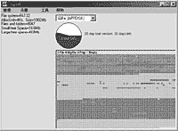

|
|
| 当前位置：电脑报电子版 > 1999 年 > 34 期 > 软件世界 > 化零为整大法——VOPT97 |
| 《 化零为整大法——VOPT97 》 |
| 现在电脑配件的价格几乎每天都在跌，尤其是硬盘，花一千多元就可以买到6.4G甚至更大的硬盘（可怜我当初买2.1G的硬盘竟要1980RMB
）。如今各种软件安装动辄需要上百兆空间，用不了多久你就会感到启动速度变慢，读写磁盘的时间增多，解决的办法之一就是整理磁盘碎片。但是Windows自带的磁盘碎片整理程序Defrag的速度实在让人无法恭维，每次整理我那并不算大的4.3G硬盘竟要花几个小时，相信大家都有过类似的痛苦经历吧。不整理又不行，直到我发现了VOPT97，用过以后就可以把DEFRAG扔到一边去了。 VOPT97可以对16位及32位的WIN95及WIN98磁盘分区进行磁盘碎片整理和压缩工作，使磁盘保持最佳性能和可靠性。它的高速度使你每天都可以做磁盘碎片整理工作。它的速度到底有多快？我对2G分区做一次整理只花了4分钟。 系统要求 运行VOPT97只要求你使用Win95或Win98操作系统，至少3MB的可用磁盘空间。如果你需要在WinNT上使用，可以使用它的NT版本VOPTNT。使用 VOPT97启动后的界面如图：1.整理菜单： 整理磁盘：对当前选择的磁盘分区进行碎片整理及压缩。 自动整理：对多个磁盘分区进行碎片整理及压缩。 退出：退出VOPT97。 2.设置菜单： 最大量压缩：选中该选项允许对大于25M的文件进行压缩。 最大量整理：选中该选项允许对大于25M的文件进行整理。 自动整理：编辑自动整理时对哪些磁盘分区进行整理。 设置进度：利用Windows的计划任务程序设置VOPT97的定期自动整理。 3.工具菜单： 检查磁盘：分析当前选择的磁盘分区的文件系统结构以确定没有结构错误，并显示所有的碎片。 校验磁盘：对选择的磁盘分区上的文件和目录进行扫描以确定它们全部可读。该功能类似于SCANDISK的全面测试。 16进制表：以16进制的形式显示磁盘扇区的内容。 提高磁盘效率的几点建议 1.如果磁盘太满的话应用程序的速度会变慢，磁盘碎片整理也很难进行。所以，对于比较小的磁盘分区（<500MB）最好保持15％以上的可用空间；对于比较大的磁盘分区（>2GB）最好保持5％以上的可用空间；对于引导分区（C：），至少要有40MB以上的可用空间。2.及时释放浪费的磁盘空间。包括清空回收站、删除上网后的历史记录以及删除临时文件夹和文件。 3.经常做磁盘碎片整理。如果每天都使用VOPT97整理碎片，你的磁盘能在几分钟内得到优化，你的系统也能一直保持最佳的状态。建议使用Windows的计划任务程序至少每周自动运行一次VOPT97。 如果你对这个软件感兴趣，可以到htt://www.goldenbow.com下载VOPT97的30天评估版本。如果你有什么问题或好的软件推荐，欢迎来信：wang.jy@990.net。 (请该文作者速与本编辑部联系) |
| 下载本期推荐软件 | 页 首 |
| 《电脑报》版权所有，电脑报网站编辑部设计制作发布 |